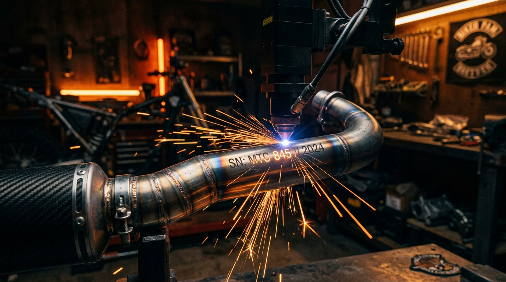
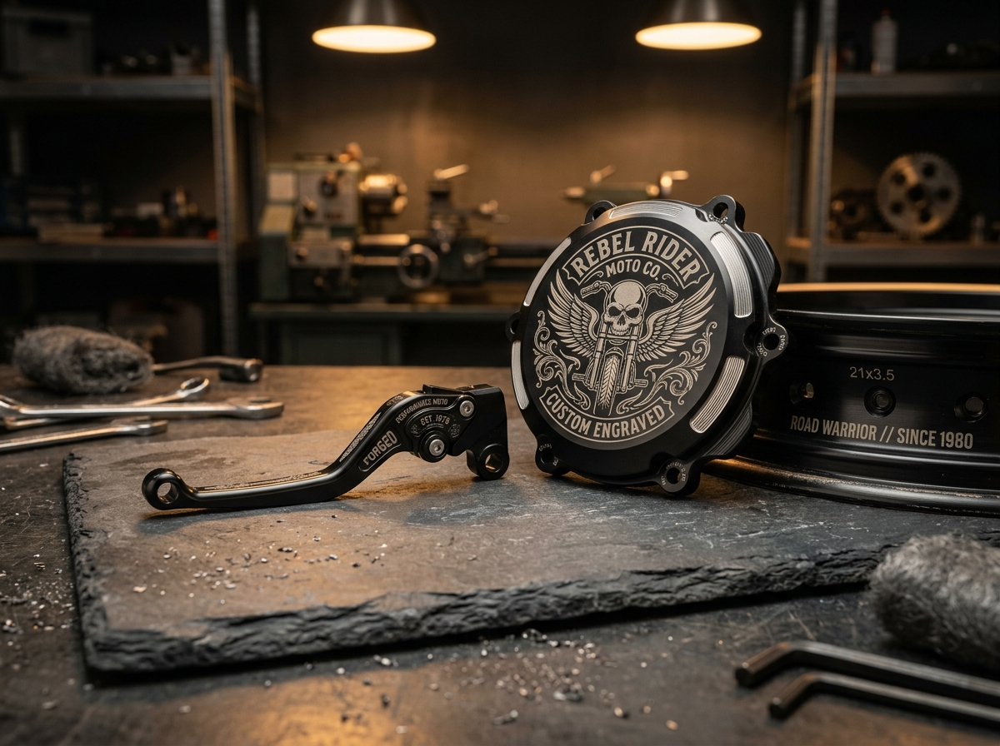
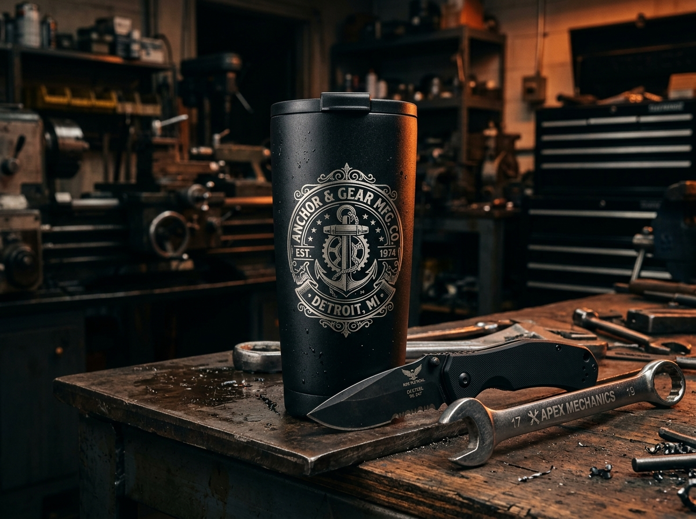

PROTEGE LO QUE TANTO TE COSTÓ: MARCACIÓN LÁSER EXTREMA PARA TU MOTO
Blindamos cada parte de tu nave contra el mercado negro en Medellín con tecnología de fibra óptica y CO2 de máxima profundidad. Personalización estética ruda en tu moto y grabado de alta precisión en cualquier metal o superficie rígida.
EN LAS CALLES DE MEDELLÍN, UN DESCUIDO CUESTA MILLONES.
LOS LADRONES SABEN QUÉ MOTOS TOCAR.
El robo de autopartes se alimenta de piezas limpias y fáciles de revender en talleres clandestinos. Una pieza con Marca Láser CZ es veneno puro para el ladrón.
Inservible para la reventa clandestina
Un ladrón no se arriesga con una pieza que lleva tu placa o identificación fundida en el metal. Al no poder venderla en el mercado negro, prefieren pasar de largo y no tocar tu máquina.
Grabado molecular, no calcomanía ni ácido barato
Olvídate de los marcados superficiales con motortool o químicos que se borran con una pulidora o lija fina. Nuestro láser de fibra altera la estructura del material a nivel microscópico: tendrían que destruir la pieza para quitarlo.
Respaldo legal y trazabilidad inmediata
Ante cualquier retén, requisa o intento de peritaje tras recuperación, demuestras de inmediato la propiedad legítima de cada autoparte con sellos legibles y precisos reconocidos por autoridades.
SERVICIOS DE GRABADO LÁSER PROFESIONAL
Especialistas en la seguridad y estética del mundo biker, además de grabado láser industrial de alta definición sobre metales y artículos rígidos.
ESPECIALISTAS EN MOTOCICLETAS: BLINDAJE & ESTILO BIKER

Personalizamos y protegemos cada componente clave expuesto al halonazo, llaves maestras o desarme rápido en parqueaderos y semáforos:
Acero inoxidable, titanio y aluminio sin quemar la fibra interna ni alterar la resonancia del escape.
Detalle nítido en piezas de lujo de fácil desmonte (Brembo, Racing, originales).
Marcación profunda resistente a temperaturas de más de 450°C, hidrocarburos y aceites.
Seguridad estructural 100% intacta con legibilidad permanente en peritajes.
Combinación de estética ruda y disuasión total en partes rodantes de alto valor.
MÁS ALLÁ DEL ASFALTO: GRABADO LÁSER INDUSTRIAL & CORPORATIVO
Aprovechamos nuestros equipos de fibra óptica y CO2 de alta precisión para proyectos especiales, dotación de talleres y regalos personalizados de alta gama:
- Termos y Vasos Térmicos (Tipo Stanley / Yeti): Grabados personalizados de logotipos, nombres o clubes moteros con acabado pulido imborrable.
- Herramientas de Taller & Maquinaria: Marca tus copas, raches, llaves y taladros para evitar pérdidas o "confusiones" en el taller.
- Navajas, Placas y Piezas Automotrices: Acero, aluminio anodizado, titanio, cuero rígido y acrílico de alta densidad.
- Lotes Empresariales y Merchandising: Placas seriales para maquinaria y recuerdos corporativos con precisión milimétrica.

SIMULADOR VIRTUAL DE MARCACIÓN LÁSER
Escribe la placa de tu moto o el texto que deseas grabar y mira cómo arde el haz láser en tiempo real:
NO DEJAMOS TU MOTO PARQUEADA DÍAS ENTEROS.
LLEGAR, MARCAR Y RODAR.
Sabemos que tu tiempo y tu transporte son sagrados. Nuestro taller opera con calibración digital para que salgas en minutos.
Elige tu Sello o Diseño
Trae tu número de placa, tu logo de club motero, tipografía biker o símbolo personal. Ajustamos la plantilla digital en pantalla a escala 1:1 exactamente en el lugar que tú indiques.
Calibración Milimétrica
Proyectamos el haz guía de luz roja sobre la pieza (sin tocarla ni rayarla) para que des el visto bueno definitivo de ubicación, tamaño y simetría antes del primer disparo láser.
Grabado Láser en Vivo
El láser de fibra óptica de alta frecuencia sella la pieza permanentemente ante tus ojos con chispas de precisión. Pagas, te subes a tu máquina y sales blindado a rodar por las calles.
LO QUE DICEN LOS MOTEROS
DE MEDELLÍN
Más de 1.800 piezas marcadas. Estas son algunas experiencias reales de quienes ya blindaron su máquina.
"Llevé mis mofles y manetas en la mañana y en 20 minutos salí con todo marcado. Se ve bacano y nadie se atreve a comprármelos por partes."
"Intenté lavar un termo grabado con desengrasante industrial y el grabado quedó intacto. El trabajo es de verdad imborrable."
"Grabamos los logos de nuestro club en termos de regalo. La terminación fue espectacular y el cliente encantado."
PREGUNTAS FRECUENTES
Todo lo que necesitas saber antes de traer tu moto a nuestro taller de marcación láser en Medellín.
No. Jamás. No usamos tintas, calcas ni químicos superficiales. El haz láser vaporiza y altera las primeras micras del metal creando un grabado térmico y molecular permanente. Resiste calor extremo de motor (+500°C), hidrolavadoras a presión, disolventes y desengrasantes de taller. Tendrían que desgastar o cortar la pieza entera para borrarlo.
No tienes que dejar tu moto botada. La gran mayoría de los trabajos toman entre 15 y 30 minutos según el número de autopartes que desees marcar. Te quedas cómodamente en el taller, presencias el proceso en vivo detrás de la zona de seguridad y sales rodando de inmediato.
Estamos ubicados en Medellín, Colombia, con parqueadero y fácil acceso para motocicletas. Para garantizar una atención inmediata sin tiempos de espera, te recomendamos escribirnos previamente a nuestro WhatsApp oficial (+57 322 902 1925) para agendar tu cupo en el día y hora que más te convenga.
¿VAS A ESPERAR A QUE TE BAJEN UNA PARTE EN UN SEMÁFORO DE MEDELLÍN?
Marcar tu moto cuesta una fracción diminuta de lo que vale reponer un mofle, unas manetas o unas tapas de calidad. Escríbenos directamente y asegura tu turno hoy mismo.